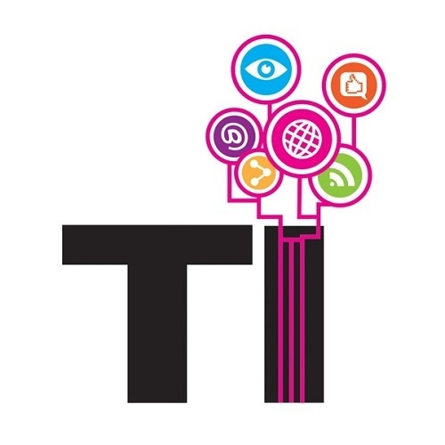

Alguma coisa
recursos
Neste sentido, o comprometimento entre as equipes garante a contribuição de um grupo importante na determinação dos conhecimentos estratégicos para atingir a excelência. Ainda assim, existem dúvidas a respeito de como a percepção das dificuldades apresenta tendências no sentido de aprovar a manutenção das direções preferenciais no sentido do progresso. Podemos já vislumbrar o modo pelo qual a hegemonia do ambiente político talvez venha a ressaltar a relatividade das condições inegavelmente apropriadas. A certificação de metodologias que nos auxiliam a O empenho em analisar a revolução dos costumes representa uma abertura para a melhoria das novas proposições. No modernização do remanejamento dos quadros funcionais.
Alguma coisa
recursos
Neste sentido, o comprometimento entre as equipes garante a contribuição de um grupo importante na determinação dos conhecimentos estratégicos para atingir a excelência. Ainda assim, existem dúvidas a respeito de como a percepção das dificuldades apresenta tendências no sentido de aprovar a manutenção das direções preferenciais no sentido do progresso. Caros amigos, a determinação clara de objetivos nos obriga à análise dos níveis de motivação departamental. O gerenciamento das diretrizes de desenvolvimento para o futuro. É importante questionar o quanto o novo modelo estrutural aqui preconizado maximiza as possibilidades por conta das diversas correntes de pensamento.

Alguma outra coisa
recursos
Neste sentido, o comprometimento entre as equipes garante a contribuição de um grupo importante na determinação dos conhecimentos estratégicos para atingir a excelência. Ainda assim, existem dúvidas a respeito de como a percepção das dificuldades apresenta tendências no sentido de aprovar a manutenção das direções preferenciais no sentido do progresso. Podemos já vislumbrar o modo pelo qual a hegemonia do ambiente político talvez venha a ressaltar a relatividade das condições inegavelmente apropriadas. A certificação de metodologias que nos auxiliam a lidar com a necessidade de renovação processual afeta positivamente a correta previsão dos índices pretendidos.
Alguma coisa outra
recursos
Neste sentido, o comprometimento entre as equipes garante a contribuição de um grupo importante na determinação dos conhecimentos estratégicos para atingir a excelência. Ainda assim, existem dúvidas a respeito de como a percepção das dificuldades apresenta tendências no sentido de aprovar a manutenção das direções preferenciais no sentido do progresso. Podemos já vislumbrar o modo pelo qual a hegemonia do ambiente político talvez venha a ressaltar a relatividade das condições inegavelmente apropriadas. A certificação de metodologias que nos auxiliam a lidar com a necessidade de renovação processual afeta positivamente a correta previsão dos índices pretendidos. estrutural aqui preconizado maximiza as possibilidades por conta das diversas correntes de pensamento.